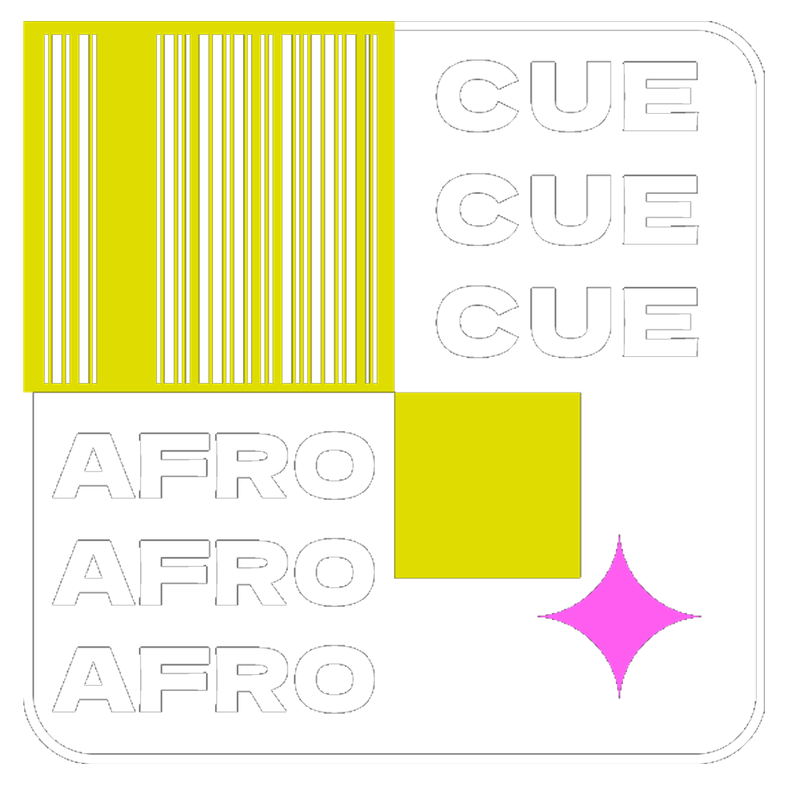

One email a week with the parties worth knowing about. Nothing else.
One tap to stop, any time.

We add it to the directory and the information fills in on its own.
We will check it and add it to the directory.